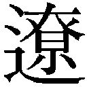

| 「日本沈没」小松左京の警鐘が甦る【文春e-Books】 | |
| 片山杜秀 & 小松実盛 | |
| 文藝春秋 (2017) | |
＊この電子書籍は縦書きでレイアウトされています。
＊読む際のご注意、お断り等については こちら をお読み下さい。
※本コンテンツは「月刊文藝春秋」２０１７年11 月号に掲載された記事を再編集したものです。
文春e-Books
文藝春秋presents
「日本沈没」小松左京の警鐘が甦る
片山杜秀×小松実盛
片山 私は小学生のときから小松左京を愛読してきて、二〇一五年、上梓した『見果てぬ日本』（新潮社）ではついに小松左京論も書いてしまいました。ですから、今日は小松さんを間近でご覧になってきた、ご子息にお会いできることを心待ちにしてきました。
小松 恐縮です。私は会社に勤めながら、小松左京の所蔵資料を整理し、小松作品の魅力を少しでも世の中に伝えようと活動を続けてきました。作家でも評論家でもありませんので、片山さんのように小松作品を深く読み込んでくださっている方を前にすると緊張してしまいます。
片山 いやいや、外から勝手なことを申しているだけでして畏れ入ります。お伺いしたいことはやまほどあるのですが、その中でも特にはやはり『日本沈没』のことです。日本列島が火山噴火、大地震、大津波に次々と襲われ、その根本理由は複数のプレートの関係する大規模地殻変動で、ついに日本全体が沈没してしまう。そのような国難に対して、日本人が英知を結集して、脱出計画を進めるというＳＦ大作です。一九七三年に刊行されて、四百六十万部を超える大ベストセラーになり、同年の年末に映画も公開され、八百万人以上を動員する超弩級の大ヒットとなりました。
当時、十歳だった私は書籍の発売後すぐに近所の書店に駆け込んで、上下二冊を求めて読破し、映画公開時には初日に駆けつけました。
その後も『日本沈没』は不朽の名作ＳＦとして、読み継がれていきました。二〇〇六年には樋口真嗣監督によって、再び映画化もされ、大ヒットを記録しました。また、一九九五年の阪神淡路大震災、二〇一一年の東日本大震災など、日本が大きな天災に見舞われるたびに、日本人の未来への指針を与える書物として、手に取られてきました。
今年の夏には、電子書籍として『日本沈没 決定版』（文藝春秋）が刊行され、若い世代にもよく読まれているそうです。電子書籍版の『日本沈没』には、小松実盛さんが非常に充実した解説を寄稿されていて、この作品に小松左京がどんな思いを込めていたのかをより深く理解することができました。
苛酷な戦争体験
小松 小学生のときから、小松左京にハマっていたなんて、ずいぶん早熟だったんですね。何がきっかけだったのですか？
片山 私が小学生だった一九七〇年代に日本のＳＦが黄金期を迎えていたからでしょう。星新一、筒井康隆、眉村卓、光瀬龍らが傑作を次々と書いていて、日本のＳＦは活気に満ちていました。私はどの作家も片っ端から読みましたが、大人になって、自分の趣味嗜好があまりにも小松左京に影響を受けていることにふと気づいて愕然としたことがあります。私は『ブリキの太鼓』のオスカル少年のように『日本沈没』を読んだときに成長が止まってしまい、そこから感性や思考が進歩していない、といってもいいくらいです。
小松 『日本沈没』が刊行されたとき、私は九歳だったので、なぜ、日本人がこんなにも父の書いた物語に熱狂するのかわかりませんでした。片山さんはなぜだと思いますか。
片山 作品が非常に面白く、完成度が高いことが、もちろん第一の理由ですが、一九七三年のオイルショックによって日本の高度成長がいったん止まり、このまま一気に日本滅亡か、という不安が国民全体に広まったのと、刊行が時期的に重なったことも大きかったのではないでしょうか。『日本沈没』はまさにその破滅図をまざまざと見せつけた。
一九七〇年の大阪万博までは、科学技術の進歩が人類の輝ける未来を短時日で作り出すと、ほとんどの日本人が思っていたと思います。私も七歳で万博に行きましたが、まさに夢の世界だと思いました。しかしオイルショックで気分は激変しました。公害問題で科学文明の負の部分も見せつけられていたし、ローマクラブのレポート「成長の限界」が石油が近々枯渇するなどと説いて、人類の未来が必ずしもバラ色ではないことが見えてきた。その暗い雰囲気のなかで、七三年には五島勉の『ノストラダムスの大予言』もベストセラーとなります。当時の日本人は、絶頂から奈落、光から闇へと突き落とされていたのです。『日本沈没』は日本に充満していた不安ガスに火を点けたことで、爆発的大ブームになったのではないでしょうか。
小松 父がそのような日本人の無意識を丸ごと浮上させるような作品を書けたのは、戦争体験があったからだと私は思います。戦争体験といっても、父は一九三一年生まれですから、出征することはありませんでした。父が体験したのは、生まれ育った一九三〇年代の阪神間に花開いた豊かでモダンな都市ブルジョワ文化と戦争によるその崩壊でした。
当時、浜甲子園阪神パークという動物園や水族館を併設した大遊園地があって、父はよく遊びにいったそうです。大阪に行けば映画はもちろんのこと、文楽や寄席があり、宝塚には歌劇があった。当時の阪神間の文化の厚味は、東京を凌駕していたかもしれません。
そのような豊かな生活が、戦争によって完全に崩れ去っていくのを父は目の当たりにしました。
日本が戦争に負けると、焼け野原に米軍が進駐してきて、人々が生き残りのために互いに争う弱肉強食の世界が現れました。社会は無秩序となり、闇市が林立して、生きるために米兵相手に体を売らなければならない女性もたくさんいました。
この天国から地獄への転落が、父にとっての戦争体験でした。父は生前、「本当のことは辛くて書けない」と言っていました。でも「戦争があったから小説家になれた」とも語っていた。
だからこそ、父は二度とあの地獄には落ちたくない、あの暗い「穴」には入りたくないと終生思っていたようです。ですから、『日本沈没』に父が込めたのは、あえて地獄を描くことで、それを日本人が総力を結集して克服し、天国へ昇っていって欲しいという切実な願いでした。
デビュー作はマンガ
片山 地獄を前にして日本人あるいは人類が力を合わせ、英知の限りを尽くし、科学を駆使して天国に昇っていく。『日本沈没』や『さよならジュピター』などで繰り返される小松作品のモチーフの根源には、小松さんの強烈な戦争体験があるのですね。地獄の克服と天国への上昇と共に小松作品には、もう一つの重要なモチーフがあります。それは、日本人が総力を結集し、科学の力を最大限に引き出し、「総力戦」を展開するというモチーフです。
小松 なぜそれを執拗に書いたのでしょうか。
片山 私の考えはこうです。小松少年は敗色濃厚な日本にいて日増しに国民の生活は悪化しているが、軍人や科学者は米軍に勝つべく「総力戦」をきちんとやっていて、最後には日本の底力が発揮されて勝てると思っていた。自伝的小説の『やぶれかぶれ青春記』によると、広島への原爆投下を知った小松少年は「敵に作れたなら、日本もじきに完成させられる」という確信を持った。しかし、負けてみて、日本には原爆を完成させられる力もなければ、「総力戦」もハリボテ同然で、陸海軍とかがセクトごとにいがみ合っていたと分かってしまった。このことに小松少年は心底落胆したのだと思います。
ですから、次こそは、たとえ負けるにしても、総力を挙げて、やるだけのことはやった、最高水準の科学で戦いを挑んだのだと、胸を張っていえるだけの「総力戦」をしたい。そんな思いが『日本沈没』や『さよならジュピター』に出てくる科学者や政治家にはみなぎっています。
小松左京が非凡な作家になりえたのは、戦争体験から得たそのような情念を、日米再び戦わば、といった架空戦記ではなく、全地球、全人類、全宇宙を巻き込んだ空想科学小説にまで昇華させたからだと私は考えています。その小松左京の気宇壮大な想像力がまずマンガに向けられたことは非常に興味深いですね。近年、小松左京のマンガ家としてのデビュー作が遠くアメリカで発見されたと聞いて、驚きました。
小松 京都大学在学中の小松左京が手塚治虫先生の作風に大きな影響を受け、「モリ・ミノル」というペンネームで、マンガ家として終戦後の占領期数年間、活動していたことは、ファンの間では、よく知られていました。しかし、デビュー作は長らく見つかっていませんでした。ところが、三年ほど前にＧＨＱ（連合軍総司令部）検閲官が、アメリカに持ち帰った資料の中に、モリ・ミノルが一九四八年に描いたデビュー作『怪人スケレトン博士』が所蔵されていることを共同通信の取材班が突きとめました。そのおかげで、私も初めて読むことができたのですが、驚くべきことに、そこには何と『日本沈没』の原型と言えるアイディアが書き込まれていました。
片山 最初に創造した作品のモチーフが、のちの代表作で爆発的に展開されるのは、音楽でも小説でも、まさに天才によく起きることです。小松さんもそうだったのですね......。
小松 実は、小説家になってから、わが家ではマンガ家時代の話は禁句でした。祖母が父のマンガ原稿を隠し持っていて、こっそりと母に託していたのですが、ある日、父に見つけられてしまいビリビリに破かれてしまったほどです。それでも私は意を決してマンガをやめた理由を聞いたことがあります。すると一言、「手塚先生には敵わないから」という答えが返ってきました。
片山 小松左京より三歳上の手塚治虫もまた阪神間で青春を過ごし、豊かな都市ブルジョワ文化のなかで育まれた才能です。手塚もまた、戦争によって、それが瓦解する地獄を見ている。モリ・ミノルこと小松左京がマンガ界にとどまり、手塚と双璧をなすような存在に成長していたら、日本のマンガ史は異なるものになっていたことでしょうね。
小松 小説家になったあと、父はある会合で手塚先生にお目にかかったそうです。憧れの先生に会えるとドキドキしていたら、手塚さんは開口一番「君があのモリ・ミノルか！」とおっしゃって、マンガの話ばかりされたそうです。
大切なものを失ってみる
片山 小松左京を非凡な作家たらしめた、もう一つの要素は、壮大な虚構を科学的に裏付けられたディテールで描いたことだと思います。空想と科学の見事な融合には、小松さんが十代で読んで、京都大学文学部でイタリア文学を専攻させることを決意させたダンテの『神曲』が深い影響を与えているのではないでしょうか。『神曲』で描かれる地獄、煉獄、天国の設定には、当時の科学的知見がふんだんに活かされ、地獄、煉獄、天国は全世界を包摂しています。小松さんが書こうとした「全体小説」の原型はここにあると思います。
小松 なるほど。説得力がありますね。ただ、文学青年が、がんばって科学を勉強し、作品を書いたと思われるかもしれないので、付け加えておきますと、父の元来の資質は理系人間だったのです。私の祖父、つまり左京の父は工場の経営者で、いくつかの特許を持つ発明家でした。子供たちには「工学系の学部に行け」とはっぱをかけていたそうです。しかし、子供たちの中で父だけが反発して、大喧嘩の末に、イタリア文学を学ぶことにした。理系的な発想をする人間が、文学に挑んだといった方が正確でしょう。ですから、科学が人間を向上させるという信念を手放すことは終生ありませんでした。
片山 そのことは、小松作品を読み解く上で、重要な鍵になると思います。小松さんは科学が人類にもたらす負の側面を描くことはあっても、単純な科学批判にとどまることはなかったからです。科学がもたらす負の側面を克服するのもまた、人類が英知を結集して進歩させた科学だと考えていたはずです。小松さんは、大きなリスクがあっても、科学の可能性に賭ける科学者を幾度も描きました。科学から逃げずに、それに全身全霊で挑み、それを味方にすることを人類に望んでいたと思われます。
そのような思想が最も反映されたのが、小松さんが様々なコンセプトを練った一九七〇年の大阪万博ですね。「人類の進歩と調和」がスローガンとして掲げられましたが、それを実現するのは「科学」です。でも、なぜ、国のイベントなのに一民間人の小松さんが、深く関わることになったのでしょうか。
小松 そもそものきっかけは、当時大阪市立大の助教授だった梅棹忠夫さんが組織していた勉強会に父が参加していたことです。大阪で万博が開かれると聞いて、「自分たちならこうしたい」と勝手にプランを練っていたところに大阪の商工会議所が接触してきて、いつのまにか、万博の正式なメンバーとして、協力することになったそうです。父は最初は乗り気ではなかったのですが、次第に深くコミットするようになりました。岡本太郎さんの「太陽の塔」内部の展示制作にも協力しています。
片山 『日本沈没』の次に伺いたいのが「アメリカの壁」についてです。一九七七年に発表された、この物語は、アメリカが謎の霧の壁に覆われ、外部との接触が困難になったというところから始まります。
アメリカの「孤立」そして、「アメリカファースト」を唱えたトランプ大統領の出現を「予言」した小説だとして、いま大変な話題になっています。小松さんはこの小説で、世界から超大国アメリカが失われたら、世界はどうなるのだろうか、という思考実験を試みています。このような思考実験は、小松さんの十八番で『首都消失』では「日本から東京がなくなったら......」、『復活の日』では「新型ウィルスが世界に流行したら......」という思考実験をしています。でも、それは単にパニックを描くための設定ではなくて、「大切」とされているものが失われたときに、「何が本当に大切なのか」を読者に考えさせるための設定です。
小松 その通りですね。「アメリカの壁」についていえば、父がアメリカ大統領という存在に特別な関心を持っていたのは、間違いありません。『復活の日』で、自分（アメリカ）が滅びるのだったら世界を道連れにしてしまおうとする大統領が出てきます。その一方で、『見知らぬ明日』には、宇宙人の侵略に対して、各国をまとめて対抗しようとする大統領を登場させています。彼はアメリカのみならず全人類への責任を背負って苦悩する。父がそうであって欲しいと思っていたのは後者です。そのような存在が人類にいなければ、核戦争の危機や天変地異、地球環境問題を人類はとても解決できないと考えていたからでしょう。トランプ大統領のようにアメリカさえよければいいんだ、と主張する人物が本当に出てくるとは、夢にも思っていなかったでしょうね（笑）。
片山 アメリカは小松左京にとって永遠の憧憬の対象だったと思うんです。アメリカ映画では、普段は個人主義でバラバラなアメリカ人が「危機」の訪れるやいなや、大統領の下に官僚、科学者が集い、一般国民も一致団結して国難を乗り切る様子がよく描かれます。実際にどうかはまた別問題ですが。とにかく小松さんは、いつも全力を出し切れない日本人に対して、科学のもたらす負の側面にも臆せず出力全開で挑むアメリカ人を、ひとつの理想像にしていたのではないでしょうか。だからこそ、昨年公開された庵野秀明総監督・樋口真嗣監督が作った映画『シン・ゴジラ』を小松さんに見てもらいたかった。あの作品は、日本の政治家、官僚、科学者の下に日本国民だけでなく、全人類の英知が集まり「総力戦」でゴジラに立ち向かう物語とも解せましたから。
小松 庵野さんも樋口さんも父のファンだと聞いています。父がどのように思ったのか、気になりますね。
「予言者」ではない
片山 小松左京は日本に大きな天変地異が起こるたびに「予言者」として、「ご託宣」を求められ、日本人は藁にもすがるように小松さんの本を繙 いてきました。しかし、私は、本来、小松左京とは「予言者」ではなく、「警 醒 」の人だと思います。これから起こりうる危機を科学的知識をもとに検証し、それが起こった場合に、人々がとりうる行動を予測する。そして、いざ危機が起こったときに人は、どのように振舞うべきなのかを常に考えておこうと、警鐘を鳴らし、呼びかけてきました。これまで述べてきたように小松さんは日本だけでなく人類に「天国」に昇ってほしいと願っていたのですから。
最後に伺いたいのは、平成日本に起こった二つの天災、一九九五年の阪神淡路大震災と二〇一一年の東日本大震災を小松さんはどのように体験されたのかです。
小松 二つの出来事は父の人生を大きく変えました。阪神淡路大震災のときには、父は大阪の北部に住んでいて自身も被災しました。そして、愛する故郷の惨状を直に見て、父が戦争のときに見た、あの「地獄」、あの黒い「穴」が再び足元に広がるのを感じてしまったようです。父はこの「穴」から逃れ、克服しようと、必死で物語を書き、世の中に警告を発してきました。しかし、高速道路が倒壊し、大火で町がまるごと焼失してしまうのを目の当たりにして、「自分の仕事は、本当に日本人や人類の役に立ってきたのだろうか」と塞ぎ込んでしまいました。
父は『日本沈没』を書いた作家としての責任を感じ、取材依頼にはすべて応え、週に二十本ほどの取材を受けていました。毎日新聞の連載を急遽、大震災のルポに切り替えて、被災地の人々に話を聞く連載にしました。母に言わせると「取材から帰ってくるたびにどんどん落ち込んでいった」そうです。そして、このときから父は物語を一切書けなくなってしまいました。
片山 地震は小松さんのせいではないのに、なぜそこまで責任を痛感していたのでしょうか。
小松 父は自分の「警醒」が活かされていれば、被害をもっと少なくできたと思っていたからでしょう。
救いだったのは、この後『日本沈没』第二部の構想が実現に向けて動きはじめたことです。作家の後輩や事務所のスタッフが、熱心に口説いてくれて、父が取材を進め、アイディアを出し、執筆は他の方にしていただくことで、第二部の完成を目指すことになりました。打ち合わせは毎回、夜中まで行われ、父がずっとしゃべり続けていました。父はなかなか皆さんを帰さなかったそうです。きっと大阪万博開催に向けて、侃々諤々の議論をしていたことを思い出し、楽しくて仕方がなかったのでしょう。皆さんが帰ってしまい、一人ぼっちになると、また、「穴」に脅える時間が待っていました。だからこそ、父は人を帰そうとしなかったのでしょう。明るく豪放磊落に見える父でしたが、非常に真面目で繊細な一面も持っていました。
片山 『日本沈没』第二部は、第一部の発表後すぐに刊行される予定でしたが、長らく刊行されなかったのはなぜだったのでしょうか。
小松 マンガと双璧をなす小松家のタブーがこの『日本沈没』第二部のことでした。父は「どうなってますかと聞くやつがいたら、たとえアメリカ大統領でも殴る」なんて言っていました（笑）。
『日本沈没』は、国土を失った日本人を描くための物語でした。第一部の当初の構想では、日本列島から四千万人だけを脱出させるつもりでした。しかし、父は執筆しながら少しでも多くの日本人を助けたくなってしまった。そこで最終的に八千万人を生き延びさせました。第二部では、その日本人たちが、日本以外の土地に移住して、どのように生きていくのかを書く予定でした。
片山 しかし、科学的に小説のディテールを突き詰めていくと、これほど多くの日本人を世界の国々は受け入れることができない。
小松 そうなんです。第一部が大ブームとなった後、文化人類学者の石毛直道さんが、バーで沈みこんでいる父に会ったそうです。理由を聞いたところ、「物語とはいえあまりにもたくさんの日本人を殺してしまった」としょげていたそうです。
第二部を書くことになると、さらに日本人を殺さざるをえません。
日本が沈没することで起った地殻変動で世界の火山活動が活発になり、噴煙が空を覆うので一気に寒冷化が進むことがわかりました。すると、日本人難民を受け入れた国でも食糧難が発生します。すると、世界中の人が、日本人に責任を擦り付け始め、「こいつらの島が沈んだせいだ」と恨まれて、日本人への迫害がはじまる。この過程で多数の日本人の命が失われる。一生懸命、日本人を救う物語にしてしまったがゆえに、父はもっと多くの日本人を殺す物語を書かなければいけないことに気づいた。そのために筆が止まってしまって、「書いたけど破った」と本人は言っていました。
結局、再始動した第二部は、ＳＦ作家の谷甲州さんが最終的に執筆をしてくださって、二〇〇六年に出版されました。
片山 小説のなかで多くの日本人を殺したことに気を滅入らせたり、阪神淡路大震災の惨状に「責任」を感じてしまうのは、小松さんが自分の小説によって、日本人や人類に少しでも貢献したいという真摯な志を持っていた証だと思います。
最期の言葉は「ユートピア」
小松 東日本大震災の時は、気力も体力も非常に落ち込んでいまして、とても取材に応じる雰囲気ではありませんでした。病院に入院していまして、お見舞いにいっても疲れるからすぐに帰ってくれといった雰囲気でした。
実は私は亡くなる二日前に最後の会話をしました。「日本は今大変なことになっています。この先どうなりますか」と聞きました。すると父は「ユートピア」と答えたんです。「ユートピアですか？」と聞き返したのですが、「分からないのか」といった表情になって目をつぶってしまったので、それが何を意味するのか分かりませんでした。
父の死後、毎日小学生新聞の取材だけは受けていたことを知り、急いで記事（二〇一一年七月一六、二三、三〇日付）を読みました。そこには最期の言葉として遺された「ユートピア」を解くヒントが載っていました。父は日本人が震災のなかパニックをできるだけ抑えて、すごく立派に振舞ったことを喜んでいました。「世界中のひとがほめていましたね。これはうれしかった」「日本は必ず立ち直りますよ。自信を持っていい」。病床で聞いた「ユートピア」は、日本人は震災を乗り越えて、次の素晴らしい「天国」を建設できる、という意味だと思いました。
阪神淡路大震災の時は、足元に広がった大きな「穴」に落ちそうになりながらギリギリのところに父は立っていました。いや、少し飲み込まれてしまっていたのかもしれません。
しかし、東日本大震災後のときには、『日本沈没』の第二部で書こうとした迫害される日本人ではなく、世界に受け入れられ、賛辞を送られる日本人の姿を見て、「穴」から這い上がることができた。そして、輝かしい世界の未来を脳裡に浮かべながら、死ぬことができた。本当に安心して、亡くなったと思います。
片山 今回の対談のために小松作品をいろいろと読み直していました。日本人が「危機」に遭遇したとき、それを「喉元過ぎれば」で、何となくやり過ごすのではなく、自分たちにとって大切なものは何かを再発見し、「危機」を総力を挙げて克服し、次の高いレベルに達して欲しいという痛切な願いを感じました。日本人はこれまで残念ながら、小松左京の作品は、単なる「ＳＦ」で、リアルだとは受け止めてきませんでした。あるいは何かが起きてから、「予言」だと持て囃 してきた。しかし、近年の何回目かのブームでは、日本人が真剣に小松さんの「警醒」を受け止め始めたのではないでしょうか。そこに希望を見出したいと思います。
プロフィール
小松左京 （こまつ・さきょう）
１９３１年大阪生まれ。京都大学文学部卒業。１９６２年に「ＳＦマガジン」で商業誌デビュー。上下巻あわせて、延べ４６０万部を超えるベストセラーとなった『日本沈没』（１９７３）をはじめ、『復活の日』『首都消失』『果しなき流れの果に』『日本アパッチ族』『さよならジュピター』『虚無回廊』など、さまざまな作品を発表。日本を代表するＳＦ作家にして、ＳＦの枠を超えて多くの読者を獲得した。映画、テレビ化された作品も多い。２０１１年７月に死去。享年80 。
片山杜秀 （かたやま・もりひで）
１９６３年生まれ。思想史研究者、音楽評論家。慶應義塾大学法学部教授。２００８年、『音盤考現学』『音盤博物誌』（共にアルテスパブリッシング）で吉田秀和賞、サントリー学芸賞を受賞。２０１２年、『未完のファシズム』（新潮選書）で司馬 太郎賞を受賞。著書に『近代日本の右翼思想』（講談社選書メチエ）、『ゴジラと日の丸』（文藝春秋）、『大学入試問題で読み解く「超」世界史･日本史』（文春新書）、『近代天皇論―「神聖」か、「象徴」か』（共著、集英社新書）などがある。
小松実盛 （こまつ・さねもり）
小松左京の遺族として、小松左京の著作物、資料を研究。『小松左京の猫理想郷（ネコトピア）』（竹書房）で、猫エッセー「ＳＦ一家のネコニクル」を発表。小松左京ライブラリ名義で、ＫＡＤＯＫＡＷＡ、徳間書店、文藝春秋の小松左京の電子書籍の解説を30 作以上担当。別名義で、ラジオドラマのシナリオなども手掛ける。
小松左京の著作物や資料の利用に関しては、小松左京ライブラリhttp://sakyokomatsu.jp/まで。
表紙デザイン：藤井靖子
文春e-Books
文藝春秋presents
「日本沈没」小松左京の警鐘が甦る
２０１７年１１月２０日 発行
著 者 片山杜秀／小松実盛
発行者 石井潤一郎
発行所 株式会社文藝春秋
東京都千代田区紀尾井町３─２３
郵便番号 １０２─８００８
電話 ０３─３２６５─１２１１
〈ご注意〉
本作品の全部または一部を、著作権者ならびに株式会社文藝春秋に無断で、複製（コピー）、転載、改ざん、公衆送信（ホームページなどに掲載することを含む）することを禁じます。万一このような行為をすると、著作権法違反で処罰されます。
〈お断り〉
本作品を電子書籍化するにあたり、一部の漢字が簡略体で表示される場合があります。また、ご覧になる機種により、表示の差が認められる場合があります。